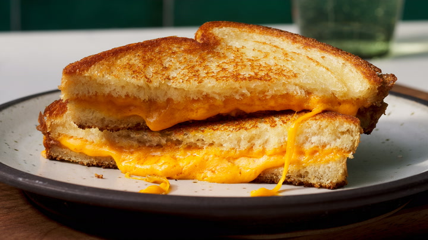

Home
Grilled Cheese Recipe

A golden crispy grilled cheese sandwich
A grilled cheese sandwich is a delicious comfort food by toasting bread
with melted cheese inside. It's golden, crispy on the outside
and gooey on the inside, making it a perfect snack or meal.
This recipe is easy to make and requires just a few ingredients.
You can customize it by adding extras like tomatoes, bacon, or avocado.
Serve it with soup or salad for a complete meal.
Ingredients
- 2 Slices of bread
- 2 slices of cheese (personally I enjoy Chedder and American cheese but use what you prefer)
- 1-2 tablespoons of butter
Steps
- Spread butter on one side of each slice of bread
- Place one slice of bread (butter side down) in a skillet over medium heat
- Lay the cheese slices on top of the bread in the skillet
- Cover with the second slice of bread butter side up
- Cook until the bottom is golden brown, then flip and cook the other side
- Remove from the skillet, slice in half and serve warm